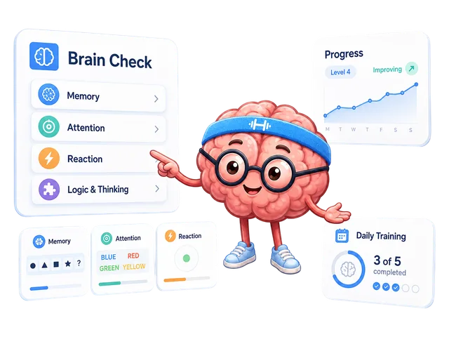

A little practice.
A clear next step.
Choose a short session. Know what to do. Keep a note of your result and come back when it suits you.
No account needed for this kit · Your journal stays in this browser

Your first session
Pick a little time and a skill area. The plan is a starting suggestion; each exercise opens on BEAPP.
Simple rules. A useful result.
Start with the rules inside the test. These short notes explain what to watch for and what to write down.
Your practice journal
Copy the result shown after an attempt. Use the same task, difficulty, device, and input method for a fair comparison.
Saved in this browser
This is a separate, manual journal. It does not import or change your BEAPP history. Export a copy before clearing browser data.
Let BEAPP choose the exercises.
Open Daily Training for a session in the app. Return to the same browser to review your app progress.
Before you start
Do I have to practice every day?
No. The 7-day plan offers choices for each day. Skip a day or take a break when you need one. A session you can finish is a useful starting point.
Where are my results stored?
Only in local storage in this browser. The kit does not send journal entries to a server. Private browsing or clearing site data may remove them. Use Export CSV to keep a copy.
Why is there no overall score?
Reaction time, recall capacity, and correct answers measure different things. Compare the same exercise under similar conditions. Read accuracy together with speed when both are shown.
Is this a medical assessment?
No. These results describe performance in particular tasks. This kit is a planning and note-taking tool. It does not diagnose a condition or promise changes in everyday abilities.